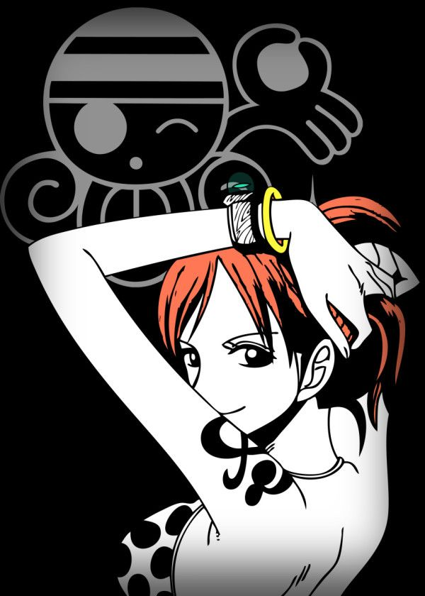

Dorobō Neko Nami
"La vida es como un lápiz que seguramente se acabará, pero dejará la bella escritura de la vida"

La única persona a la que el trio monstuoso teme.
Nami es una pirata y la navegante de los Piratas del Sombrero de Paja, así como una de las protagonistas principales de la serie. Es el tercer miembro de la tripulación y la segunda en unirse, haciéndolo oficialmente durante el arco de Arlong Park. Ella era anteriormente un miembro de los Piratas de Arlong e inicialmente se unió a los de Sombrero de Paja con el fin de robarles, pero se unió oficialmente tras rebelarse contra Arlong y su posterior derrota a manos de Luffy. Actualmente posee una recompensa de Belly 366.000.000.